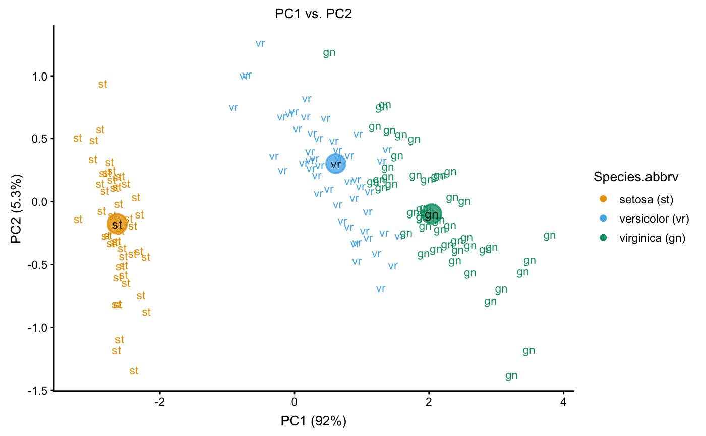
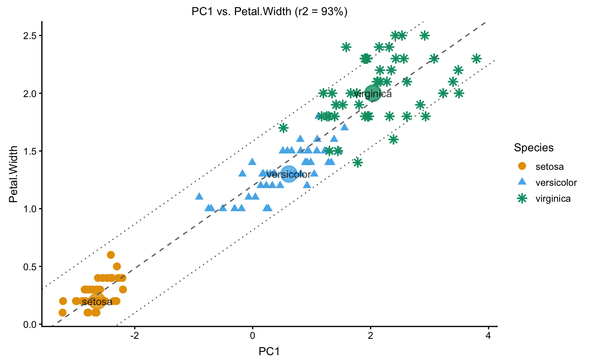
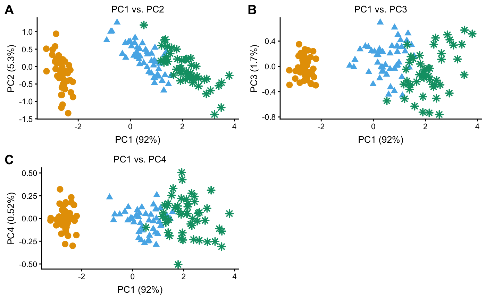
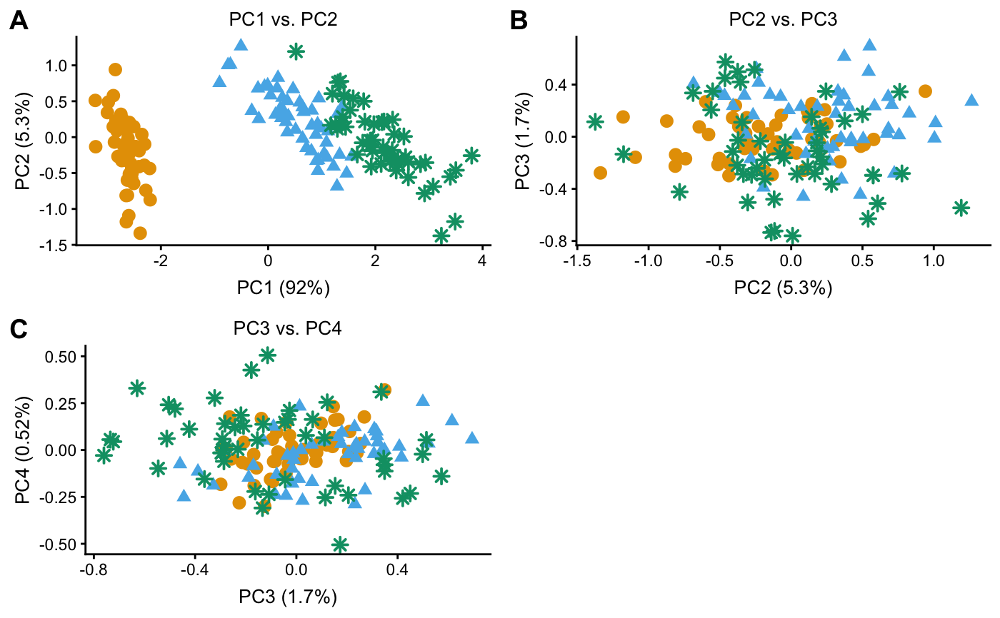

Interface for quickly creating visually compelling plots
from Principal Component Analysis (PCA) and accompanying data. Default
settings are designed to produce interesting plots with minimal user
intervention; for example, running plot(x) on "pcaviz" object
x with no additional arguments will produce a useful
visualization of the PCA results in most cases (see also the examples
accompanying this help page). The plotting interface is also
flexible and able accomodate fine-tuning for presentations,
publications, webpages, etc.
# S3 method for pcaviz
plot(x, coords, plotly = FALSE, draw.points = plotly,
label, group, color, shape, colors, shapes, abbreviated.label,
group.summary.fun = pcaviz_summary_default,
group.summary.labels = TRUE, draw.pc.axes, hide.xy.axes,
include.with.pc.axes, draw.linear.fit, draw.confint, confint.level = 0.95,
show.r.squared, preserve.scale, overlay = NULL,
geom.point.params = if (plotly)
list(size = 3,stroke = 0,na.rm = TRUE)
else
list(size = 2,stroke = 1,na.rm = TRUE),
geom.text.params = list(size = 3,fontface = "bold",na.rm = TRUE,
alpha = 1),
geom.point.summary.params = list(shape = 19,stroke = 1,size = 10,
show.legend = FALSE,alpha = 0.8),
geom.text.summary.params = list(size = 3.25,fontface = "plain",
color = "black",show.legend = FALSE,alpha = 0.8),
geom.segment.pc.axes = list(color = "black",linetype = "solid",
arrow = arrow(length = unit(5,"pt"),ends = "both",type = "open"),
size = 0.3),
geom.text.pc.axes = list(hjust = "left",size = 3),
geom.abline.params.linearfit = list(color = "dimgray",
linetype = "dashed"),
geom.abline.params.confint = list(color = "dimgray",
linetype = "dotted"),
scale.pc.axes = 0.6, theme = theme_pcaviz(), show.legend = TRUE,
plot.title, plot.grid.params = list(), tooltip = NULL,
plotly.file = NULL, …)
# S3 method for pcaviz
screeplot(x, type = c("var","pve","eigenvalue"),
geom.point.params = list(size = 2,stroke = 1,color = "black",na.rm = TRUE),
geom.line.params = list(size = 1,color = "black",na.rm = TRUE),
theme = theme_pcaviz(), plot.title = NULL, …)
pcaviz_loadingsplot(x, pc.dim, color, colors, add.labels, min.rank = 0,
gap = 0, geom.point.params = list(size = 1,na.rm = TRUE),
theme = theme_pcaviz())
pcaviz_violin(x, data.col, pc.dims, colors, sorted = TRUE,
rank.fun = median, horizontal = FALSE, theme = theme_pcaviz(),
violin.params = list(trim = FALSE, show.legend = FALSE),
plot.grid.params = list())
pcaviz_colors_categorical(n = 7)
pcaviz_colors_continuous()
pcaviz_shapes(n = 5)
theme_pcaviz()
pcaviz_reduce_whitespace(x, dims)
pcaviz_abbreviate_var(x, col,
abbrv.generic = function (x)
abbreviate(abbreviate(gsub("[^[:alnum:] ]","",x)),
minlength = 2,named = FALSE,method = "both.sides"),
abbrv.custom = function (x)
countrycode(x,"country.name.en","iso2c",warn = FALSE))
pcaviz_summary_default(x,
stat.numeric = function (x) median(x,na.rm = TRUE))
| x | An object of class "pcaviz". |
|---|---|
| coords | The names of the PCs or data columns to plot in the
horizontal and vertical axes. This may specify more than 2
variables, in which case all combinations of the variables will be
compared in different panels. For interactive graphics ( |
| col | Name of PC or data column in pcaviz object |
| data.col | Name of categorical variable in |
| dims | Names of PCs in pcaviz object |
| pc.dims | Names of PCs in pcaviz object |
| pc.dim | Name of a PC in pcaviz object |
| plotly | If |
| draw.points | If |
| label | The column to use for labeling the data points. The
default is to label the data points according to the first
categorical variable found, otherwise the first data column of type
|
| group | Categorical variable (column of type |
| color | PC or data column used to color the points or labels. For
|
| shape | PC or data column used to determine shape of each point
drawn. This option has no effect when |
| colors | Colors to use in the plots. This should be a vector of
colors which is passed as input to
|
| shapes | Shapes to use in the plots. This should be a should be a
suitable vector specifying shapes which is passed as input to
|
| abbreviated.label | Show the abbreviated labels instead of the
original labels (as specified by argument |
| group.summary.fun | Function used to generate summary statistics. It should be a function that takes a data frame as input and output as a data frame with the same number of columns, and only one row containing a summary of each of the table columns. |
| group.summary.labels | If |
| draw.pc.axes | If |
| hide.xy.axes | If |
| include.with.pc.axes | Statistic to show next to the axis labels:
|
| draw.linear.fit | If |
| draw.confint | If |
| confint.level | A number between 0 and 1 specifying the quantile used to draw the confidence interval. |
| show.r.squared | If |
| preserve.scale | If |
| overlay | A function that takes as input a ggplot object and returns a ggplot object, presumably a modified version of the input object. See Section "Overlays" below for more information about this argument. |
| add.labels | If |
| min.rank | A number between 0 and 1. When |
| gap | Only relevant when |
| sorted | If |
| rank.fun | Function used to determine ranking for sorting factor levels in violin plots. |
| horizontal | If |
| theme | A ggplot2 theme. |
| geom.point.params | Additional parameters passed to
|
| geom.line.params | Additional parameters passed to
|
| geom.text.params | Additional parameters passed to
|
| geom.point.summary.params | Additional parameters passed to
|
| geom.text.summary.params | Additional parameters passed to
|
| geom.segment.pc.axes | Additional parameters passed to
|
| geom.text.pc.axes | Additional parameters passed to
|
| geom.abline.params.linearfit | Additional parameters passed to
|
| geom.abline.params.confint | Additional parameters passed to
|
| violin.params | Additional parameters passed to
|
| plot.grid.params | Additional parameters passed to
|
| scale.pc.axes | Number between 0 and 1 determining length of PC axis lines. Numbers close to 0 are generally not recommended as they may produce incorrectly displayed axis lines. |
| show.legend | If |
| plot.title | Plot title used, overriding the automatically generated plot title. |
| tooltip | Character vector specifying which PCs or data columns
to display in the plotly "tooltip". For more details, see
|
| plotly.file | If not |
| n | Number of colors or shapes to return. |
| abbrv.generic | Generic abbreviation for character strings; see
|
| abbrv.custom | Custom abbreviation for character strings; see
|
| stat.numeric | Summary statistic for numeric vectors used by
|
| type | Quantity to show in the vertical axis of the scree plot:
|
| … | Additional input arguments to generic plotting functions that are not used here. |
Function pcaviz_violin generates one or several "violin" plots
for visualizing the relationship between PCs and a categorical
variable.
Functions pcaviz_colors_categorical and pcaviz_shapes
define default colors and shapes used for plotting categorical
variables (i.e., factors) in the PCAviz plotting interface. These can
be used as the values argument to
scale_color_manual and
scale_shape_manual. The colors are based on
http://www.cookbook-r.com/Graphs/Colors_(ggplot2) and the
"Color blindness" paper by Wong (2008). If more than 7 colors are
requested, the colors are repeated; if more than 5 shapes are
requested, the shapes are repeated. Since LCM(5,7) = 35, functions
pcaviz_colors_categorical and pcaviz_shapes can be
easily combined to create as many as 35 unique color-shape
combinations.
Function pcaviz_colors_continuous specifies the default color
scheme (turquoise--red) used for plotting continuous variables (i.e.,
numeric data columns). This can be used as the "colors" argument for
the scale_color_gradientn function. These colors
are obtained from viridis::plasma(8).
Function theme_pcaviz defines the default ggplot2 theme. It is
based on the cowplot default theme.
Function pcaviz_reduce_whitespace heuristically rescales the PC
data to reduce the amount of "whitespace" (that is, unused space) in a
PCAviz plot. This function often helps to make the plots more visually
attractive. It also has the added benefit of minimizing the amount of
automatic scaling done by ggplot2, so that, for example, rotated
PC axes are less likely to be distorted. Dimension dims[1] is
always unscaled, and the remaining dimensions are scaled relative to
the first.
Function pcaviz_summary_default is the default function for
generating group summaries. It takes as input a data frame, and
outputs a data frame with the same number of columns, and only one
row: if a column is numeric, it outputs the median; if the column is
a factor, it outputs the level with the highest count; otherwise, it
just outputs the first row.
Functions plot.pcaviz and pcaviz_violin return a
ggplot object.
For additional customization of PCAviz plots, we have included an
"overlay" option. When not NULL, argument overlay should
be a function that accepts a single input argument, a ggplot
object. The return value is also a ggplot object, which is
presumable a modified version of the input ggplot object. The
overlay function is called before any graphics ("geom's") are drawn,
so that any points, labels and so on are plotted on top of the overlay
graphics.
The overlay function can be very simple. For example, this overlay
adds the x = y line to the plot: overlay_abline <- function (p)
p + geom_abline(slope = 1, intercept = 0, color = "orangered",
linetype = "dotted").
See pcaviz-maps for examples of overlays that draw world maps on the plot using the maps package.
Note that some features of ggplot2 graphics are not fully
implemented in plotly, so some of the plotting options are
disabled when plotly = TRUE.
All plotting variables must be specified as character strings. This is
because the ggplot2 aesthetic mappings are specified in PCAviz
using aes_string, not the more commonly used
aes. The latter is more flexible (e.g., can
take expressions instead of column names) but is also more error-prone
when used inside a function due to the fact that the expressions will
be evaluated outside the function call.
One important reason for using ggplot2 graphics is that plots
are easily extensible. However, due to ggplot's use of R's
"lazy evaluation", the inherit.aes option should be set to
FALSE when adding additional layers to the plot; e.g., using
geom_point. See the examples below and
vignettes for demonstrations of how to correctly extend plots created
using the PCAviz plotting functions.
Wong., B. (2011). Points of view: color blindness. Nature Methods 8, 441.
Wong, B. and Krzywinski, M. (2013). Points of view: plotting symbols. Nature Methods 10, 451.
pcaviz,
pcaviz-transformations,
pcaviz-maps,
create_abbreviated_label,
lm,
plot,
ggplot,
geom_point,
geom_text,
geom_violin,
geom_abline,
scale_shape_manual,
scale_color_manual,
scale_color_gradientn,
theme,
ggplotly,
saveWidget
theme_cowplot,
countrycode
# Create pcaviz object from prcomp output. data(iris) x <- pcaviz(prcomp(iris[1:4]),dat = iris) # Plot the samples projected onto the first two PCs, and label the # samples by Species. plot(x)#> Abbreviations used in plot: #> Species Species.abbrv #> setosa st #> versicolor vr #> virginica gn#># Show Species as different colors and shapes. plot(x,draw.points = TRUE)#># Show Petal Width as different colors, and Species as different shapes. plot(x,draw.points = TRUE,color = "Petal.Width",shape = "Species")#># Plot the first PC vs. Petal Width. plot(x,coords = c("PC1","Petal.Width"),draw.points = TRUE)# Plot all combinations of PCs 1-4. plot(x,coords = paste0("PC",1:4),draw.points = TRUE,group = NULL)#># Draw the rotated PC axes. y <- pcaviz_reduce_whitespace(x) y <- pcaviz_rotate(y,15) plot(y,draw.points = TRUE)#># Show the proportion of variance explained by PCs 1-4. screeplot(x)# Plot Species against PCs 1-4. pcaviz_violin(x)# NOT RUN { # One advantage of ggplot2 is that it easily allows for combining plots; # here we give an example of overlaying additional data on top of the # PCAviz scatterplot. Note that the inherit.aes = FALSE option is # needed, otherwise it will give an error. library(ggplot2) d <- subset(x$data,Petal.Width > 2.25) d <- with(d,data.frame(x = PC1,y = PC2)) plot(x,draw.points = TRUE,group = NULL) + geom_point(data = d,aes(x = x,y = y), shape = 1,size = 5.5,inherit.aes = FALSE) # These the vignettes for extended demonstrations of the PCAviz # plotting interface. vignette("iris") vignette("popres") vignette("regmap") # }